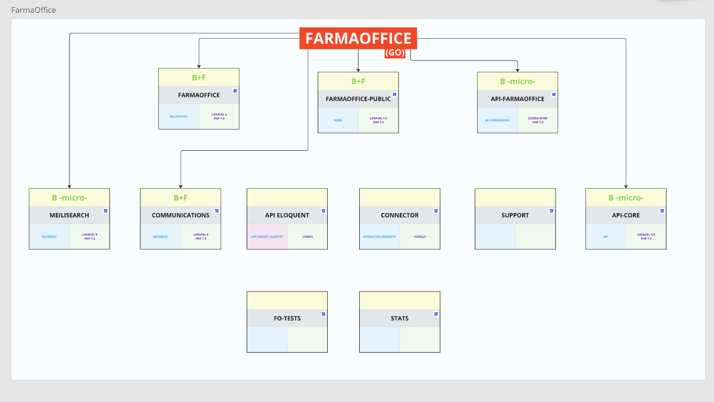
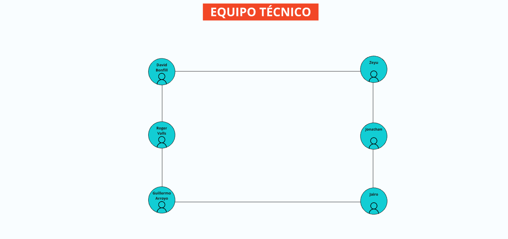
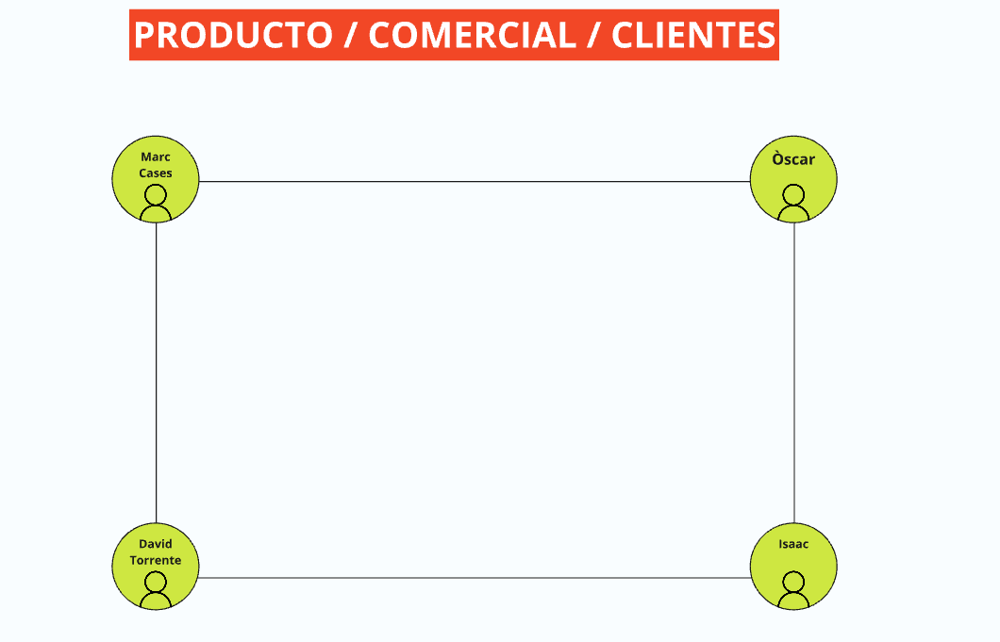

Manual del desarrollador
Conoce nuestro ecosistema y equipo
Ecosistema
Farmaoffice

Farmacloud

Nextera

Equipo
IT

COMERCIAL

Instalación del equipo de desarrollo
Por norma general, trabajamos con sistemas basados en Linux (Ubuntu u otras distros) e incluso Mac.
Para comenzar, necesitarás instalar las siguientes herramientas. Dependiendo de tu distro, sigue los pasos adecuados. En este manual, se describe la instalación en Ubuntu 22.04.
Herramientas principales
| Herramienta | Descripción |
|---|---|
| Slack | - Se recomienda usar Slack Web o Rambox en lugar de la aplicación de escritorio, ya que esta puede presentar problemas en Ubuntu. - Consulta el documento sobre buenas prácticas en comunicación de equipo. |
| PHPStorm | - Se recomienda usar el mismo IDE entre compañeros para facilitar el soporte técnico. - Si necesitas una licencia, solicítala. |
| DBeaver | - Cliente MySQL para conectarse a bases de datos. - Puedes usar otro con el que te sientas cómodo. |
| Docker y Docker-compose | - Necesarios para la ejecución de los proyectos. - Opcional: DockStation para gestionar visualmente las instancias en ejecución. |
| GIT | - Instalar la última versión para interactuar con Bitbucket. |
| Sublime Text | - Editor de texto auxiliar. - Puedes usar VS Code o cualquier otro. |
| OpenFortiGUI | - Cliente VPN recomendado. - Ubuntu 22.04 presenta problemas con la VPN, consulta el documento correspondiente. |
| Filezilla | - Cliente FTP útil para acceder a entornos remotos. |
| Ásbrú Connection Manager | - Facilita la conexión SSH. - Puedes importar configuraciones existentes en Digital Ocean, FarmaOffice y Fedefarma. |
Configuración GIT
Configurar GIT correctamente es clave para que los commits sean identificables:
git config --global user.name "Nombre Apellido"
git config --global user.email "usuario@bibloos.com"
Si usas más de un ordenador, asegúrate de que la configuración sea la misma en ambos.
Más adelante, puedes explorar alias y otros comandos útiles.
Configuración Bitbucket
Asegúrate de tener acceso a Bitbucket con la cuenta de empresa:
Si no puedes ver los proyectos, solicita acceso a tus compañeros.
Añadir clave SSH
Trabajar con claves SSH en Bitbucket permite realizar clones, pulls y pushes sin ingresar usuario y contraseña constantemente.
Clave SSH general
Para generar una clave SSH en un ordenador nuevo:
ssh-keygen -t ed25519 -C "user@bibloos.com"
Deja los campos en blanco y presiona ENTER.
Para visualizar la clave generada:
cat ~/.ssh/id_ed25519.pub
Copia el contenido y agrégalo en Bitbucket.
Clave SSH webmaster
Para acceder a repositorios especiales con el usuario webmaster@bibloos.com:
ssh-keygen -t ed25519 -o -C "user@bibloos.com" -f ~/.ssh/id_ed25519_webmaster
Luego, añade la clave en Bitbucket con el usuario webmaster.
Instalación de proyecto FarmaOffice
Para instalar el proyecto principal de FarmaOffice, es necesario seguir varios pasos.
Se asume que ya tienes Docker, GIT y las herramientas principales instaladas.
Consulta este documento actualizado con los pasos específicos para la instalación. Si encuentras algún problema, coméntalo en Slack con tu equipo.
📄 Tómate tu tiempo, sigue los pasos y pregunta si tienes dudas.